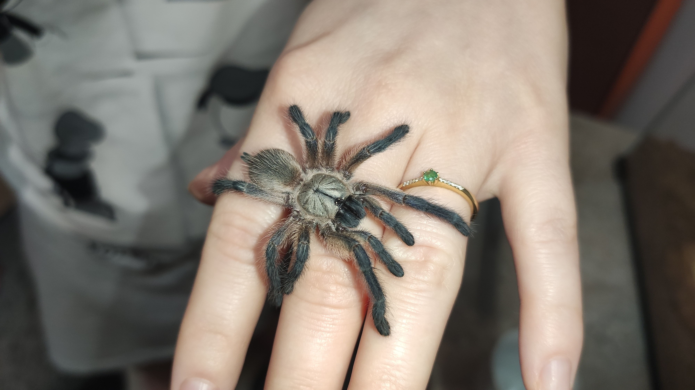

Japanese example:「こんにちは世界」
Types of tarantulas, classified by geographical location:
The Monocentropus balfouri known commonly in the hobby as the Socotra Island Blue Baboon was described by Pocock in 1897 and is an Old World Terrestrial species that is native to the island of Socotra about 150 miles east of the horn of Africa.